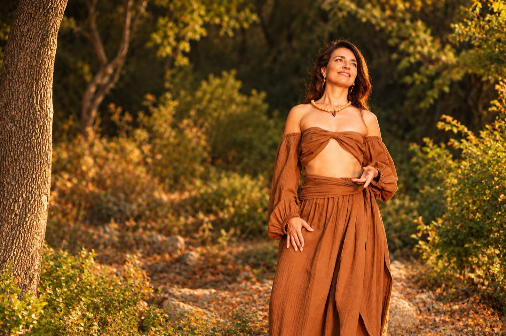
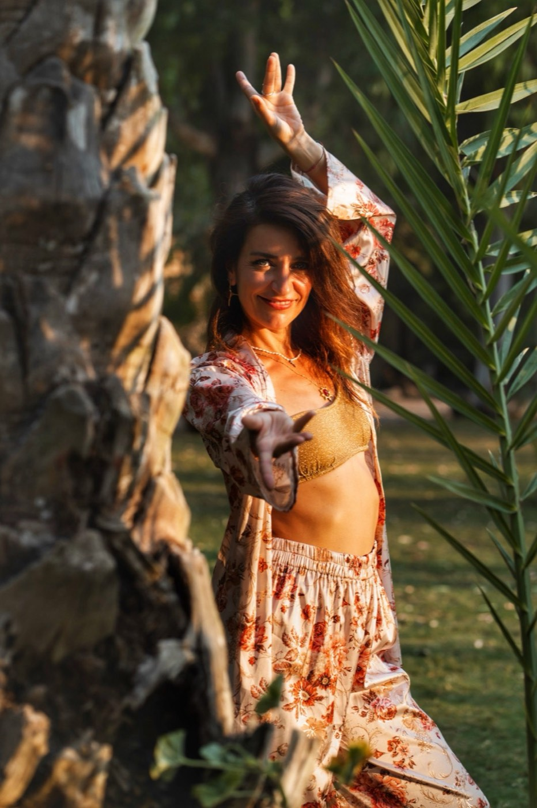
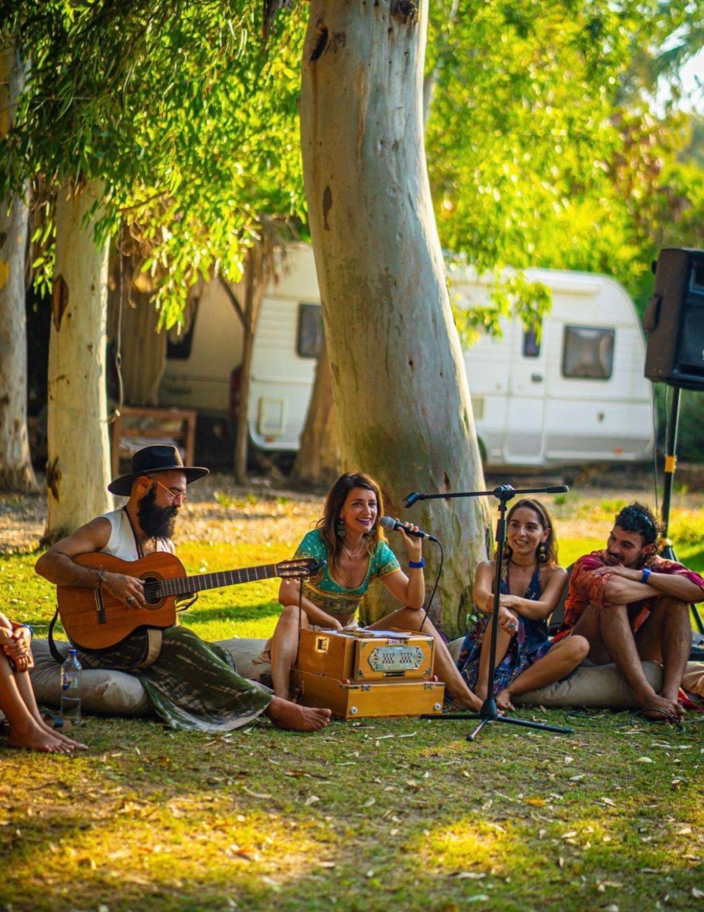
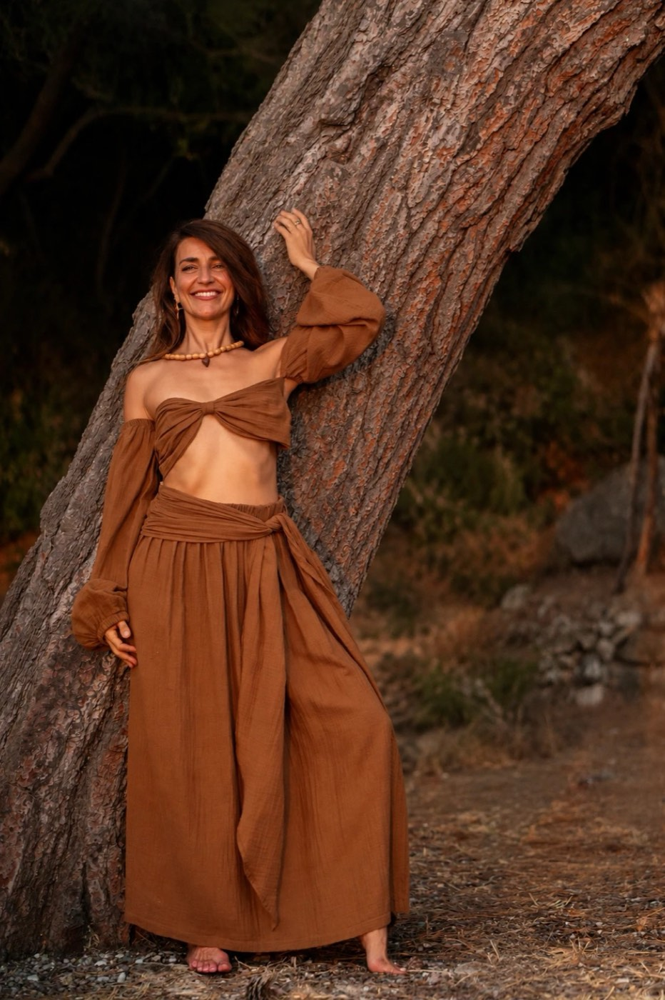
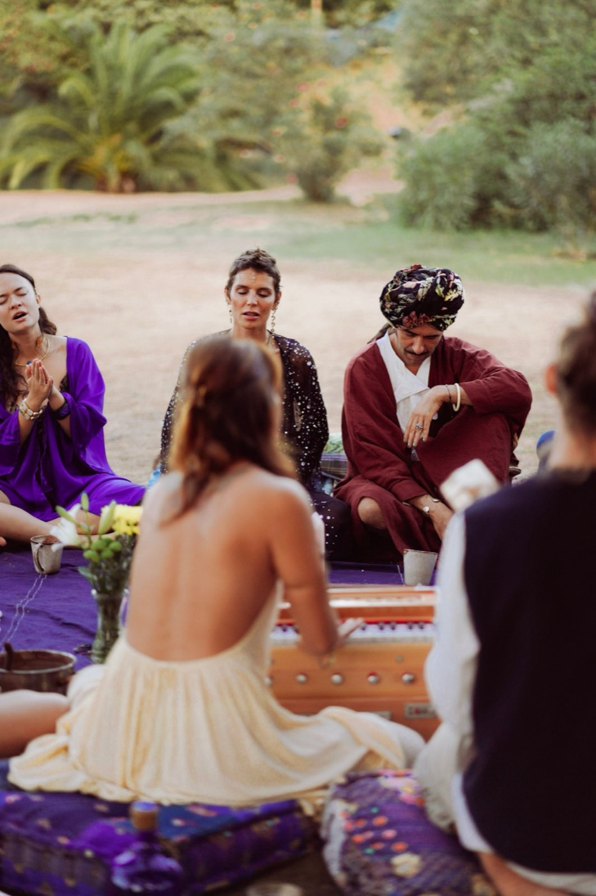
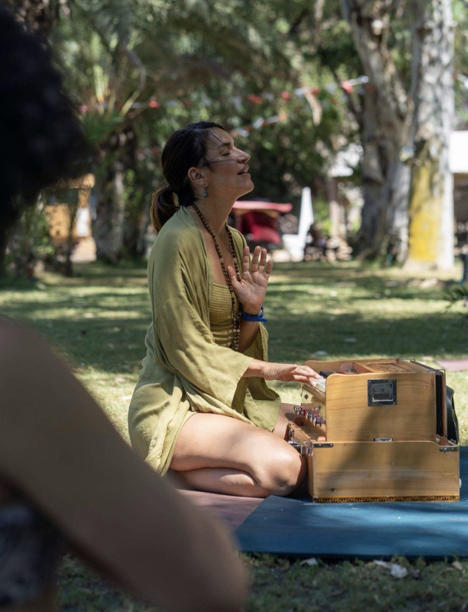
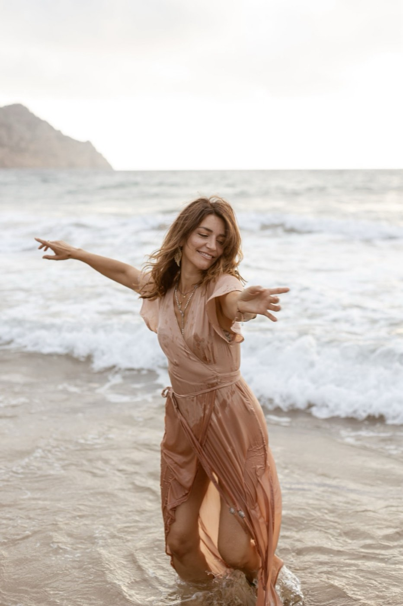
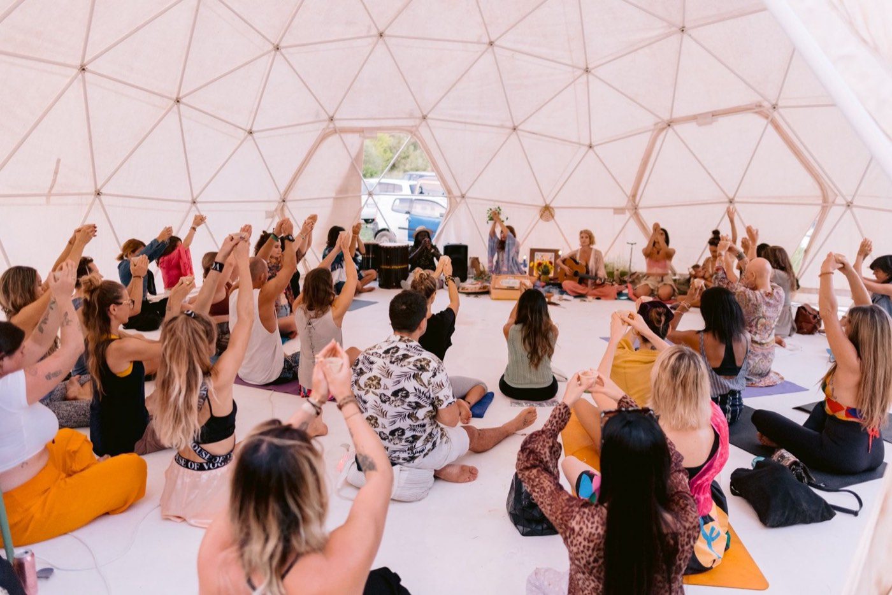

Meet Anna
HEARTist ✺ Voice coach ✺ Embodiment guide
Hey, I'm Anna
Italian-Swiss by roots and a true inhabitant of the world, I spent many years in London, Ibiza and Berlin.
I used to work in the music scene, first as a radio speaker and then as a talent agent. I discovered yoga more than 15 years ago and immediately grew devoted to it. Through tough times in that career, my yoga and meditation practice and my spiritual awakening helped me rise above obstacles and fears, and offered me a path of constant expansion and rediscovery of my authentic Self.
I founded Flawsome Wellness more than nine years ago to bridge the SOMA, the heart-womb and authentic expression. Today my work lives where voice alchemy, somatic intelligence, Bhakti Yoga and regenerative culture design meet.
Increasingly, I sense my purpose as a bridge between the earthly and the divine. In humble service, I create spaces where people feel truly seen, heard and supported, guided by the vibration of love in my heart.

To live heart-based, embody the frequency of love, and guide others to do the same.
You are Flawsome, just as you are
To me, Flawsome means having the courage to embrace and celebrate my unique qualities, imperfections included, with compassion and kindness.
It's about deeply loving myself as I am today, with all my strengths, skills, talents and quirks, and I want the people I work with to be able to do the same. Perfection is limiting. When we learn to love ourselves deeply, we can truly accept ourselves, and emotional authenticity becomes the foundation for unconditional self-love.
When you live in alignment with who you truly are, you naturally vibrate at a higher frequency. Health, happiness, abundance and joy become easier to create.
Weaving new culture
I support visionaries and system creators in reclaiming their voice, aligning with purpose, and embodying coherence between body, heart and leadership.
My work extends into cultural regeneration: supporting and creating new systems, communities and relational ways of living rooted in care, trust and coherence. Today I steward Liminal Village, an eco-tech regenerative hub in Italy, and collaborate with NAO on care economies and trust-based systems.
Read about Liminal Village →
Four threads
The voice as a portal for clarity, resonance and impact.
Listening to the body's wisdom and the heart-womb.
Devotion, mantra and kirtan as a path back to love.
Communities and systems rooted in care and trust.
Background
- Saraswati Bhakti Yoga Academy with Audrey Sarquilla (2023)
- Soma Chandra Yin YTT with Persia Juliet (2021)
- 40hr Weaving the Theme YTT with Persia Juliet (2020)
- 300hr YTT Ra Vinyasa, Radiantly Alive (2020)
- Integrative Nutrition Health Coach (INHC), IIN (2019)
- 200hr YTT Hatha & Vinyasa, Vinyasa School (2018)
- BA Media & Communication, Goldsmiths, University of London (2011)
What people say
“Anna has this water-like quality that weaves moments together and she channels a deep presence that feels like a song.”
“Her love and attention is like a warm blanket: her only goal is to guide you through your transformation.”
“Throughout the coaching, Anna was flexible, insightful and inspiring. She encouraged me to grow and create more healthy habits.”
“I always trust people who can laugh freely and from the heart. If you hear Anna's laugh, you will understand what I am talking about.”




